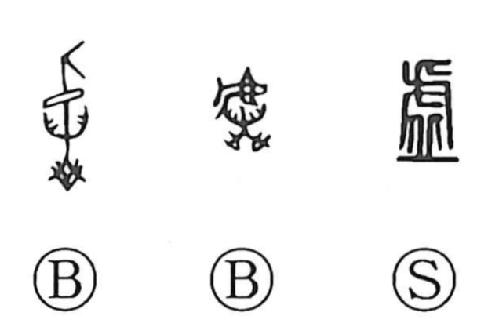

虚

Kun: munashii, utsuro | On: kyo, ko
emptiness ・ ruins ・ falsehood
Explanation
虚 is a phono-semantic character. The upper element 虍 functions as the phonetic, giving the reading ko, and its lower strokes originally formed the shape of a hill 丘. In antiquity, cities were established on hills and contained sacred precincts and cemeteries; when a city fell, what remained were the mounded sites of buildings and graves. From this image, 虚 signified the desolate remains of a city—later also written with 墟—and, through usage in words like 廃墟, its sense broadened to what is absent or no longer present. Hence it came to mean empty or in vain, and by further extension, that which lacks substance—falsehood or a lie.